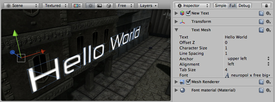

Text Mesh
The Text Mesh generates 3D geometry that displays text strings.

The Text Mesh Inspector
The Text Mesh Inspector
You can create a new Text Mesh from .
Properties
| Text | The text that will be rendered |
| Offset Z | How far should the text be offset from the transform.position.z when drawing |
| Character Size | The size of each character (This scales the whole text) |
| Line Spacing | How much space will be in-between lines of text. |
| Anchor | Which point of the text shares the position of the Transform. |
| Alignment | How lines of text are aligned (Left, Right, Center). |
| Tab Size | How much space will be inserted for a tab '\t' character. This is a multiplum of the 'spacebar' character offset. |
| Font | The TrueType Font to use when rendering the text. |
Details
Text Meshes can be used for rendering road signs, graffiti etc. The Text Mesh places text in the 3D scene. To make generic 2D text for GUIs, use a GUI Text component instead.
Follow these steps to create a Text Mesh with a custom Font:
- Import a font by dragging a TrueType Font - a .ttf file - from the Explorer (Windows) or Finder (OS X) into the Project View.
- Select the imported font in the Project View.
- Choose .
You have now created a text mesh with your custom TrueType Font. You can scale the text and move it around using the Scene View's Transform controls.
Note: you need to change both the Font and the material of the GUIText component so you can see the right font, if you dont do it, your text mesh is going to look weird.
Hints
- When entering text into the Text property, you can create a line break by holding and pressing .
- You can download free TrueType Fonts from 1001freefonts.com (download the Windows fonts since they contain TrueType Fonts).
- If you are scripting the Text property, you can add line breaks by inserting the escape character "\n" in your strings.